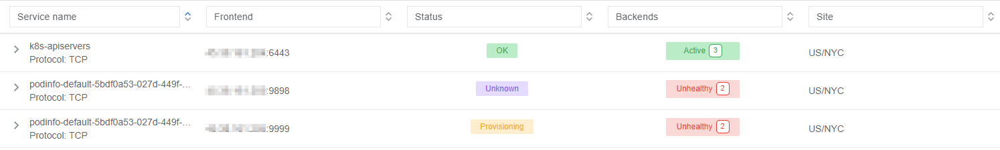
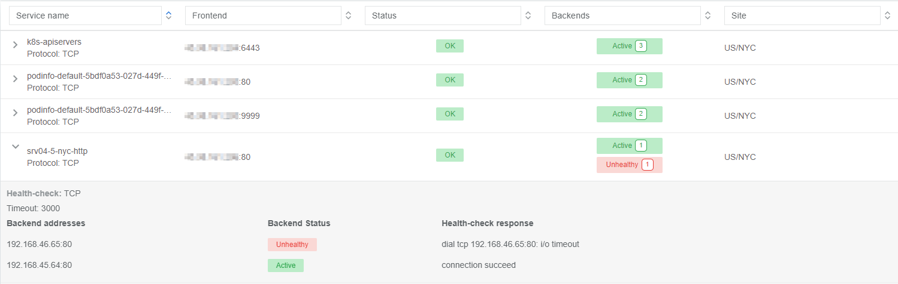

Join Slack
Join Slack
Kubernetes Integration
Netris integrates with Kube API to provide on-demand load balancer and other Kubernetes specific networking features. Netris-Kubernetes integration is designed to complement Kubernetes CNI networking and provide a cloud-like user experience to local Kubernetes clusters.
Install Netris Operator
Integration between the Netris Controller and the Kubernetes API is completed by installing the Netris Operator. Installation can be accomplished by installing regular manifests or a helm chart:
Helm Chart Method
Instructions are available on Github: https://github.com/netrisai/netris-operator/tree/master/deploy/charts/netris-operator#installing-the-chart
Regular Manifest Method
Install the latest Netris Operator:
kubectl apply -f https://github.com/netrisai/netris-operator/releases/latest/download/netris-operator.yaml
Create credentials secret for Netris Operator:
kubectl -nnetris-operator create secret generic netris-creds \
--from-literal=host='http://**your-netris-controller-ip-or-host**' \
--from-literal=login='**your-netris-admin-username**' --from-literal=password='**your-netris-admin-password**'
Inspect the pod logs and make sure the operator is connected to Netris Controller:
kubectl -nnetris-operator logs -l netris-operator=controller-manager --all-containers -f
Example output demonstrating the successful operation of Netris Operator:
{"level":"info","ts":1629994653.6441543,"logger":"controller","msg":"Starting workers","reconcilerGroup":"k8s.netris.ai","reconcilerKind":"L4LB","controller":"l4lb","worker count":1}
Note
After installing the Netris Operator, your Kubernetes cluster and physical network control planes are connected.
Using Type ‘LoadBalancer’
In this scenario we will be installing a simple application that requires a network load balancer:
Install the application “Podinfo”:
kubectl apply -k github.com/stefanprodan/podinfo/kustomize
Get the list of pods and services in the default namespace:
kubectl get po,svc
As you can see, the service type is “ClusterIP”:
NAME READY STATUS RESTARTS AGE
pod/podinfo-576d5bf6bd-7z9jl 1/1 Running 0 49s
pod/podinfo-576d5bf6bd-nhlmh 1/1 Running 0 33s
NAME TYPE CLUSTER-IP EXTERNAL-IP PORT(S) AGE
service/podinfo ClusterIP 172.21.65.106 <none> 9898/TCP,9999/TCP 50s
In order to request access from outside, change the type to “LoadBalancer”:
kubectl patch svc podinfo -p '{"spec":{"type":"LoadBalancer"}}'
Check the services again:
kubectl get svc
Now we can see that the service type changed to LoadBalancer, and “EXTERNAL-IP” switched to pending state:
NAME TYPE CLUSTER-IP EXTERNAL-IP PORT(S) AGE
podinfo LoadBalancer 172.21.65.106 <pending> 9898:32584/TCP,9999:30365/TCP 8m57s
Going into the Netris Controller web interface, navigate to Services / L4 Load Balancer, and you may see L4LBs provisioning in real-time. If you do not see the provisioning process it is likely because it already completed. Look for the service with the name “podinfo-xxxxxxxx”
After provisioning has finished, inspect the service in k8s:
kubectl get svc
You can see that “EXTERNAL-IP” has been injected into Kubernetes:
NAME TYPE CLUSTER-IP EXTERNAL-IP PORT(S) AGE
podinfo LoadBalancer 172.21.65.106 50.117.59.202 9898:32584/TCP,9999:30365/TCP 9m17s
Using Netris Custom Resources
Introduction to Netris Custom Resources
In addition to provisioning on-demand network load balancers, Netris Operator can also provide automatic creation of network services based on Kubernetes CRD objects. Let’s take a look at a few common examples:
L4LB Custom Resource
In the previous section, when we changed the service type from “ClusterIP” to “LoadBalancer”, Netris Operator detected a new request for a network load balancer, then it created L4LB custom resources. Let’s see them:
kubectl get l4lb
As you can see, there are two L4LB resources, one for each podinfo’s service port:
NAME STATE FRONTEND PORT SITE TENANT STATUS AGE
podinfo-default-66d44feb-0278-412a-a32d-73afe011f2c6-tcp-9898 active 50.117.59.202 9898/TCP US/NYC Admin OK 33m
podinfo-default-66d44feb-0278-412a-a32d-73afe011f2c6-tcp-9999 active 50.117.59.202 9999/TCP US/NYC Admin OK 32m
You can’t edit/delete them, because Netris Operator will recreate them based on what was originally deployed in the service specifications.
Instead, let’s create a new load balancer using the CRD method. This method allows us to create L4 load balancers for services outside of what is being created natively with the Kubernetes service schema. Our new L4LB’s backends will be “srv04-nyc” & “srv05-nyc” on TCP port 80. These servers are already running the Nginx web server, with the hostname present in the index.html file.
Create a yaml file:
cat << EOF > srv04-5-nyc-http.yaml
apiVersion: k8s.netris.ai/v1alpha1
kind: L4LB
metadata:
name: srv04-5-nyc-http
spec:
ownerTenant: Admin
site: US/NYC
state: active
protocol: tcp
frontend:
port: 80
backend:
- 192.168.45.64:80
- 192.168.46.65:80
check:
type: tcp
timeout: 3000
EOF
And apply it:
kubectl apply -f srv04-5-nyc-http.yaml
Inspect the new L4LB resources via kubectl:
kubectl get l4lb
As you can see, provisioning started:
NAME STATE FRONTEND PORT SITE TENANT STATUS AGE
podinfo-default-d07acd0f-51ea-429a-89dd-8e4c1d6d0a86-tcp-9898 active 50.117.59.202 9898/TCP US/NYC Admin OK 2m17s
podinfo-default-d07acd0f-51ea-429a-89dd-8e4c1d6d0a86-tcp-9999 active 50.117.59.202 9999/TCP US/NYC Admin OK 3m47s
srv04-5-nyc-http active 50.117.59.203 80/TCP US/NYC Admin Provisioning 6s
When provisioning is finished, you should be able to connect to L4LB. Try to curl, using the L4LB frontend address displayed in the above command output:
curl 50.117.59.203
You will see the servers’ hostname in curl output:
SRV04-NYC
You can also inspect the L4LB in the Netris Controller web interface:
V-Net Custom Resource
You can also create Netris V-Nets (L2 segments) via Kubernetes with a simple manifest:
cat << EOF > vnet-customer.yaml
apiVersion: k8s.netris.ai/v1alpha1
kind: VNet
metadata:
name: vnet-customer
spec:
ownerTenant: Admin
guestTenants: []
sites:
- name: US/NYC
gateways:
- 192.168.46.1/24
switchPorts:
- name: swp2@sw22-nyc
EOF
And apply it:
kubectl apply -f vnet-customer.yaml
Let’s check our VNet resources in Kubernetes:
kubectl get vnet
As you can see, provisioning for our new VNet has started:
NAME STATE GATEWAYS SITES OWNER STATUS AGE
vnet-customer active 192.168.46.1/24 US/NYC Admin Provisioning 7s
After provisioning has completed, the L4LB’s checks should work for both backend servers, and incoming requests should be balanced between them.
BGP Custom Resource
You can create BGP peers via Kubernetes manifests:
Create a yaml file:
cat << EOF > isp2-customer.yaml
apiVersion: k8s.netris.ai/v1alpha1
kind: BGP
metadata:
name: isp2-customer
spec:
site: US/NYC
softgate: SoftGate2
neighborAs: 65007
transport:
name: swp14@sw02-nyc
vlanId: 1092
localIP: 50.117.59.118/30
remoteIP: 50.117.59.117/30
description: Example BGP to ISP2
prefixListOutbound:
- permit 50.117.59.192/28 le 32
EOF
Apply the manifest file:
kubectl apply -f isp2-customer.yaml
Check created BGP:
kubectl get bgp
Allow up to 1 minute for both sides of the BGP sessions to come up:
NAME STATE BGP STATE PORT STATE NEIGHBOR AS LOCAL ADDRESS REMOTE ADDRESS AGE
isp2-customer enabled 65007 50.117.59.118/30 50.117.59.117/30 15s
Then check the state again:
kubectl get bgp
The output is similar to this:
NAME STATE BGP STATE PORT STATE NEIGHBOR AS LOCAL ADDRESS REMOTE ADDRESS AGE
isp2-customer enabled bgp: Established; prefix: 30; time: 00:00:51 UP 65007 50.117.59.118/30 50.117.59.117/30 2m3s
Feel free to use the import annotation for this BGP if you created it from the controller web interface previously.
Return to the Netris UI and navigate to Net / Topology to see the new BGP neighbor you created.
Importing existing resources from Netris Controller to Kubernetes
You can import any custom resources, already created from the Netris Controller to k8s by adding this annotation:
resource.k8s.netris.ai/import: "true"
Otherwise, if try to apply them w/out “import” annotation, the Netris Operator will complain that the resource with such name or specs already exists.
After importing resources to k8s, they will belong to the Netris Operator, and you won’t be able to edit/delete them directly from the Netris Controller web interface, because the Netris Operator will put everything back, as declared in the custom resources.
Reclaim Policy
There is also one useful annotation. So suppose you want to remove some custom resource from k8s, and want to prevent its deletion from the controller, for that you can use “reclaimPolicy” annotation:
resource.k8s.netris.ai/reclaimPolicy: "retain"
Just add this annotation in any custom resource while creating it. Or if the custom resource has already been created, change the "delete" value to "retain" for key resource.k8s.netris.ai/reclaimPolicy in the resource annotation. After that, you’ll be able to delete any Netris Custom Resource from Kubernetes, and it won’t be deleted from the controller.
See also
See all options and examples for Netris Custom Resources here.
Calico CNI Integration
Netris Operator can integrate with Calico CNI. This annotation will automatically create BGP peering between cluster nodes and the leaf/TOR switch for each node, then to clean up it will disable Calico Node-to-Node mesh. To understand why you need to configure peering between Kubernetes nodes and the leaf/TOR switch, and why you should disable Node-to-Node mesh, review the calico docs.
Integration is very simple, just need to add the annotation in calico’s bgpconfigurations custom resource. Before doing that, let’s see the current state of bgpconfigurations:
kubectl get bgpconfigurations default -o yaml
As we can see, nodeToNodeMeshEnabled is enabled, and asNumber is 64512 (it’s Calico default AS number):
apiVersion: crd.projectcalico.org/v1
kind: BGPConfiguration
metadata:
annotations:
...
name: default
...
spec:
asNumber: 64512
logSeverityScreen: Info
nodeToNodeMeshEnabled: true
Let’s enable the “netris-calico” integration:
kubectl annotate bgpconfigurations default manage.k8s.netris.ai/calico='true'
Let’s check our BGP resources in k8s:
kubectl get bgp
Here are our freshly created BGPs, one for each k8s node:
NAME STATE BGP STATE PORT STATE NEIGHBOR AS LOCAL ADDRESS REMOTE ADDRESS AGE
isp2-customer enabled bgp: Established; prefix: 28; time: 00:06:18 UP 65007 50.117.59.118/30 50.117.59.117/30 7m59s
sandbox9-srv06-nyc-192.168.110.66 enabled 4200070000 192.168.110.1/24 192.168.110.66/24 26s
sandbox9-srv07-nyc-192.168.110.67 enabled 4200070001 192.168.110.1/24 192.168.110.67/24 26s
sandbox9-srv08-nyc-192.168.110.68 enabled 4200070002 192.168.110.1/24 192.168.110.68/24 26s
You might notice that peering neighbor AS is different from Calico’s default 64512. The is because the Netris Operator is setting a particular AS number for each node.
Allow up to 1 minute for the BGP sessions to come up, then check BGP resources again:
kubectl get bgp
As seen our BGP peers are established:
NAME STATE BGP STATE PORT STATE NEIGHBOR AS LOCAL ADDRESS REMOTE ADDRESS AGE
isp2-customer enabled bgp: Established; prefix: 28; time: 00:07:48 UP 65007 50.117.59.118/30 50.117.59.117/30 8m41s
sandbox9-srv06-nyc-192.168.110.66 enabled bgp: Established; prefix: 5; time: 00:00:44 N/A 4200070000 192.168.110.1/24 192.168.110.66/24 68s
sandbox9-srv07-nyc-192.168.110.67 enabled bgp: Established; prefix: 5; time: 00:00:19 N/A 4200070001 192.168.110.1/24 192.168.110.67/24 68s
sandbox9-srv08-nyc-192.168.110.68 enabled bgp: Established; prefix: 5; time: 00:00:44 N/A 4200070002 192.168.110.1/24 192.168.110.68/24 68s
Now let’s check if nodeToNodeMeshEnabled is still enabled:
kubectl get bgpconfigurations default -o yaml
It is disabled, which means the “netris-calico” integration process is finished:
apiVersion: crd.projectcalico.org/v1
kind: BGPConfiguration
metadata:
annotations:
manage.k8s.netris.ai/calico: "true"
...
name: default
...
spec:
asNumber: 64512
nodeToNodeMeshEnabled: false
Note
Netris Operator won’t disable Node-to-Node mesh until k8s cluster all nodes’ BGP peers are being established.
Finally, let’s check if our earlier deployed “Podinfo” application is still working when Calico Node-to-Node mesh is disabled:
curl 50.117.59.202
Yes, it works:
{
"hostname": "podinfo-576d5bf6bd-mfpdt",
"version": "6.0.0",
"revision": "",
"color": "#34577c",
"logo": "https://raw.githubusercontent.com/stefanprodan/podinfo/gh-pages/cuddle_clap.gif",
"message": "greetings from podinfo v6.0.0",
"goos": "linux",
"goarch": "amd64",
"runtime": "go1.16.5",
"num_goroutine": "8",
"num_cpu": "4"
}
Disabling Netris-Calico Integration
To disable “Netris-Calico” integration, delete the annotation from Calico’s bgpconfigurations resource:
kubectl annotate bgpconfigurations default manage.k8s.netris.ai/calico-
or change its value to "false".